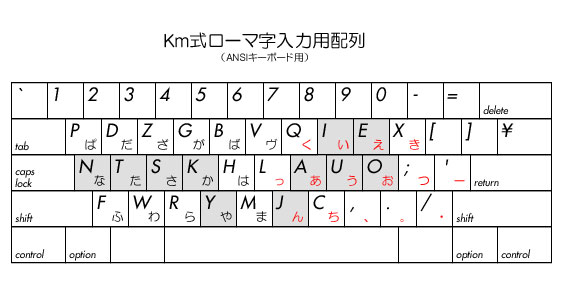

オマケ -- Ｋｍ式英字配列(＆入力法)
― ローマ字入力用に最適化し た英字配列とその使い方 ―
順番にここまで読んでこられた方の中には、
私がローマ字入力に対して否定的なようだと
感じておられる方も多いでしょうね。(^o^;;;
まぁ、当たらずといえども遠からずなんですが(爆)、
だからといって英字入力そのものまで 否定しているわけでは ありません。
（※私は、単に、日本語入力というものをトータルで考えてみて、
利点と欠点を秤にかけた結果、かな入力になっただけです。
ハングルや中国語なら また事情は違ったと思います）
なにより、そもそも MadDic式の短縮入力自体、紛れもなく、
ローマ字入力の利点/長所を理解せずしては誕生し得ない
イノベーションなのであります。(^_^;
とはいえ、やはり、心ある人なら、
できれば 日本語入力には かな入力をしてもらいたいし、
先に述べてきたように、私の考案した様々な入力法や文字配列を以てすれば、
教育的見地、正統性からして、そうあるべきではないかと思います。
しかし、人には それぞれの事情というものもあるし(笑)、
日本語入力の最高峰であるＭ式が ローマ字入力であることを考えると、
それもまた、健全な形で保存し、守り伝えていかねばならない
“文化”ないし“遺産”の ひとつなのかなという気もします。
そこで 私は、ある時、ふと気がついたのですが、
キーボードが もし このような文字配列（後述）になっていれば、
ローマ字入力も あながち捨てたものでもないなと思ったんですね。
つまり、ローマ字入力が クソな(笑)入力方式になってしまっている最大の原因は、
このダメなキーボードの文字配列にあるということです。
この、いわゆるQWERTY配列といわれる文字配列は、
私が言及するまでもなく、ローマ字入力には 向いていない文字配列です。
（英語の入力にさえも向いていない...(=_=;）
このように 子音と母音が メチャクチャに入り乱れている文字配列では、
それでなくても打鍵効率の悪いローマ字入力が、
さらに使いにくく、労働負荷の高い入力方式になってしまうのです。
結論から言えば、その解決策として、
キーボードをＭ式にするか、少なくとも Dvorak配列にすれば、
かなり（ある程度は）改善されることが わかっています。
とはいえ、キーボードを買い替えてまで
入力効率を向上させようと思う人は なかなか いないし、
アメリカで 第２の標準配列とされている Dvorak配列にしても、
やはり日本語入力に対しては、
必ずしも パーフェクトな対応が期待できるわけでは ありません。
そこで、両者の中間に位置し、なおかつ、
それらをも凌駕する(？笑)イノベーションとして 私が考案したのが、
標題にもなっている「Ｋｍ式文字配列」なのです。（下図参照）

この文字配列の大きな特長は、まず、Ｍ式の考え方に則っているということです。
図の赤字で示した部分が「広義の母音」にあたるキーですが、
［あ］［い］［う］［え］［お］を この並びにしておくと、
専用のキーを設けなくても、「ａｉ」「ｅｉ」「ｏｕ」などの 二重母音が
とても 楽に打てるんですね！！！(^o^;
これは、このＫｍ式配列の最大の特長と言っていいと思います。
（※Dvorak配列では こうは いきませんよ！！！(笑)）
また、［ん］［く］［き］［つ］［ち］［っ］は、
従来のキーボードと 通常のＩＭを そのまま使って
Ｍ式のような快適な入力を行なうために設けたキーで、
これにより 従来のローマ字入力では２音節になってしまう「広義の母音」を、
他の母音と同様の感覚で 入力することが できます。
（※Ｍ式では「広義の母音」として１キーが 割り当てられていますが）
特に「ん」は、従来のローマ字入力では、
次に母音が来た時にナ行の文字に変換されてしまうという
構造的な欠陥(笑)が ありましたが、
Ｋｍ式では、ローマ字の変換テーブルを書き換えて、
１ストロークで 入力できるようにしたばかりでなく、
この位置に配置したことにより、親指で 押すことが 可能となり(爆)、
まさにＭ式風(?)の快適な操作感が 味わえます。(^o^;
（それは ともかくとしても、「ん」が １ストロークで 入力できるのは
意外に かなりの快感が ありますよ！(^-^)）
それから、子音のキーについては、
ホーム段に まず「か・さ・た・な」と並べ、
「は」以降は 従来の［Ｇ］から 順に 時計回りに並べ、
濁音をそれぞれの上段に割り振りました。
これにより、わかりやすさと使いやすさを両立したばかりでなく、
［Ｙ］を 親指で押すことによって(爆)、
「広義の子音」にも対応できるのではないかと思っています。(^o^;;;
（「ｈｙ」「ｍｙ」「ｒｙ」は 親指では 押しにくいですが、
使用頻度は そんなに多くないと思われるので...）
・・・ということで、
かつてローマ字入力を試していたこともある筆者の試運転によれば、
かなりの入力効率アップになると思うのですが、いかがでしょう？
今のところ、パッチソフトなどの配布はしていませんが、
要望があるようなら、作ろうかなと思っているのですが...(^_^;
ご意見・ご感想等をお待ちしております。
・・・・・・・・・・・・・・・・・・・・・・・・・・・・・・・
【余談ですが...】
最近になって知ったのですが、
とうとう、かの名作にして民族的遺産であるＭ式が、
発売元より正式にサポートされなくなりました。(=_=;;;
まぁ、来るべき時が来たのかなという感じですが、
本当に惜しいことをしたものです。
実は、私は、最近になって、
Ｍ式の有効な活用法を思いついたのですが、
時すでに遅しというか、
Ｍ式の普及に貢献できなかったことが 残念です。(=_=#;
さて、それはともかくとして、話は変わりますが、
その思想を引き継いで、有志の方が、
通常のキーボードで、Ｍ式を実現するソフトを作られたそうな・・・。
どの程度まで エミュレートするのか わかりませんが、
残念ながら、それは、私からすれば、到底Ｍ式とはいえないシロモノですね。
（なんか、ＨＰも とても わかりにくいのが 困ります...）
詳しいことは 割愛しますが、
もともとＭ式は、一見しただけでは、その利点は わかりにくいものなのです。
（私も理解するのに 15年かかりました(爆)）
改めて言うまでもなく、
あの設計コンセプトを体現するためには、あのハードウエアが必要なわけで、
それを、従来のナナメズレキーボード(苦笑)で 実現し、
なおかつ、その利点を納得させることは、不可能でしょう。
単にキーの並びと操作性(機能)を同じにしてもダメです。
それは、このＨＰの冒頭で 述べている通りです。
「郷に入れば郷に従え」です。(笑)
英字を並べて、50音配列だと言ったところで、
100％誰も そうは思わないでしょう。(^o^;;;
（「子供だまし」という言葉がありますが、まるで“老人だまし”...）
単に、子音と母音を左右に分けたことにしかならないのでは、
まだ、Dvorak.jpのほうが、互換性があるだけマシです。(^o^;;;
話は戻りますが、私が思うには、
かの名作Ｍ式が 思ったほどに普及しなかったのは、
日本人の国民性や 人間の頭の固さなどの他に、
“敷居が高かったこと”が 挙げられるのではないかと思います。
つまり、その利点を理解し、使えると納得するのに、
かなりの理解力と想像力を必要とするのです。
（さらには、その使いこなしも含め...）
ストレートに言ってしまえば、
「わかりにくい」ということです。(^.^;;;
もちろん、わかりやすさが 即 普及につながるとは 思いませんが、
重要なポイントであることは 確かでしょう。
そういう意味では、
単に 子音と母音を使用頻度に基づいて分けるだけで
とりあえず使えるようになるアルファベット圏のキーボードとは
事情が違うといえます。
言い換えれば、見た目が Dvorak配列に似ていることも
欠点の１つといえるかもしれません。(^_^;;;
その某製品は、図らずも、Ｍ式の利点として
“マトリックス”的な設計思想に着目し、それを訴えようとしているみたいなのですが、
それならば、なぜ母音が「アイウエオ順」でないのか、説明がつきません。
また、本来 日本人が マトリックス状に かなを捉えるのは、
左手側に子音、右手側に母音がくるのが 自然であり、
その点でも、Ｍ式で 50音配列をうたうのは、誤っているといえます。
すなわち、結論からいえば、
従来のキーボードを用いて Ｍ式の利点＝設計思想を体現しようとするなら、
この「Ｋｍ式」のようにならざるを得ない(爆)(爆)(爆)わけです。(^o^;;;
もちろん、使い込んでいった段階で、
多少不便なこと(?)も 発覚してくるかもしれませんが、
ほとんどの人は、そんなに文字入力ばかりしているわけではないので、
通常の使用量においては、問題ないと思われます。(^_^;
（例えば、［Ｙ］と［ん］の位置を工夫したことによって、
低速打鍵にも 高速打鍵にも 対応できるものと思われます）
もしさらに改良を加えるとすると、
［Ｐ］と［Ｆ］の位置は 変えてもいいかもしれないと思います。
（現状は、統一感のほうを優先していますが、
英語／カタカナ語では、Ｐやパ行がよく使われるので）
また、左手側の負担を分散するために、
右手側の空いているところに、JIS配列と同様、
濁点と半濁点を置いてもいいかもしれません。(^_^)
これにより、手で文字を書く時のような感覚で、
ローマ字入力≒マトリックス入力ができるようになります。
（その人の好きずきと状況に応じて、左手上段と使い分ければよい）
なお、このＫｍ式で、Ｍ式を継承していながら、
母音をマトリックス状に配置していないのは、
広義の母音を排除して、打ちにくい小指を母音から外したほうが、
結果的には、日本語入力には適していることが 判明したからです。
母音を一列に並べるのは、Dvorak配列の影響かもしれませんが、
しばらく使い込めば、それが得策でないことがわかると思います。(^_^;
（このあたりは、主観的なものもあるかもしれませんが...）
また、広義の母音も、段ごとにキーを分けるより、
本作のように１つにまとめてしまったほうが 使い勝手が良いと思うのですが、
どうでしょうか？？？＞森田先生。(^.^;;;